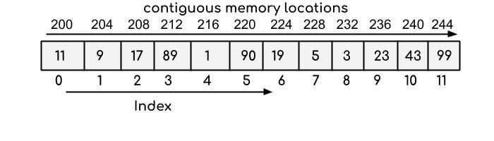
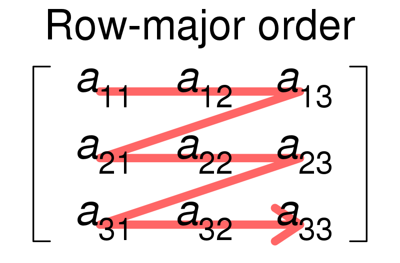
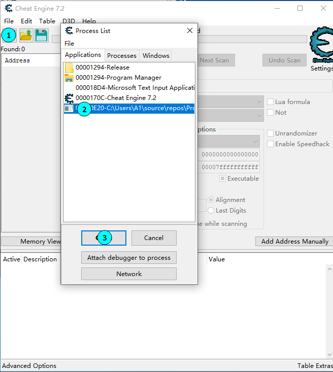
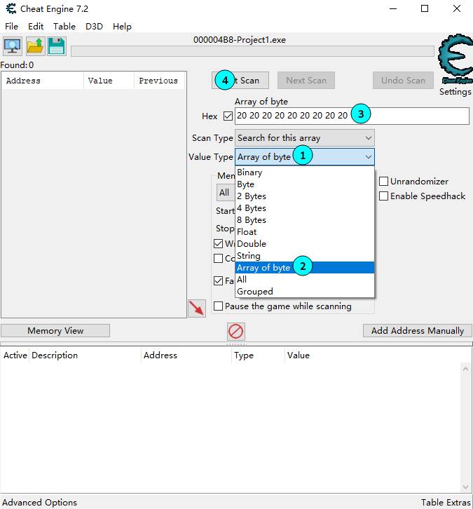
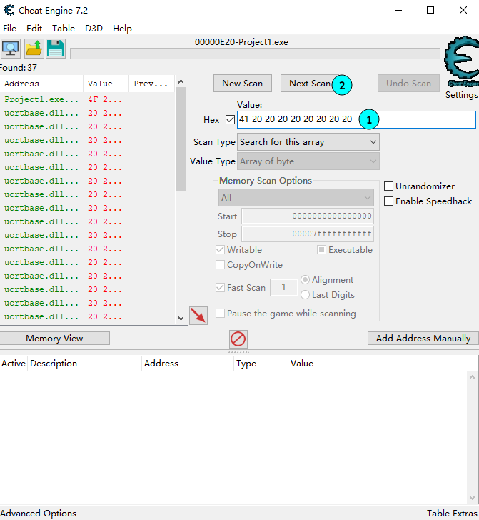
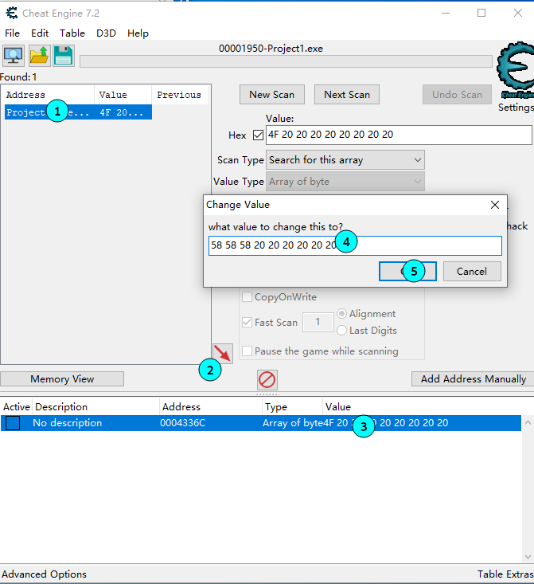
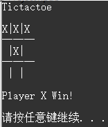

简介
2020-11-20下午CTF课上的小实验
实验内容
- C语言数组及其在内存中的结构
- 开发一个井字棋游戏
- 用CE进行破解
C语言的数组
数组和链表
高三时同学们统一购买了一本必背64篇的小本本，而转学来的李四书上的顺序与同学们不同。
为了跟同学们同步，ta想出了个好办法：在每篇古文上，记下它在同学们书上的上下篇，对应到李四书上的页码。
如：生于忧患，死于安乐 上一篇P23，下一篇P233
所以，当同学们从一篇翻页到下一篇时，李四通过”下一篇”的页码来定位。
- 李四很快就发现，当他定位到“下一篇时”，同学们都念完第一段了
- 某天学渣张三被抓去念早读
张三：“同学们，翻开第20篇”
李四：啪一下就站起来了
同学们的书就是数组，李四的书就是链表
| 数组 | 链表 | |
|---|---|---|
| 存储方式 | 连续 | 离散，通过寻址的方式链接 |
| 随机访问速度 | 极快 | 很慢 |
| 遍历速度 | 极快 | 快 |
| 可变性 | 仅支持改 | 任意位置增删改 |
所以数组有什么用？
- 数组是在内存中整块存储的运行时大小不可变的数据结构
- 因为这个特性，数组是访问速度最快的数据结构
- 事实上，李四的链表还是基于数组的。众多的数据结构都能使用数组来实现。
指针与数组
- 数组是内存中的一小块，而指针用于描述内存中的一个点
- 因此，数组用于存储，指针主要用于访问
- 描述C的数组，只需要一个指针表示起始地址，一个整数表示长度
- 指针加法：偏移sizeof(指针类型)的量
C语言数组取地址的小细节
// Arrays in Memory
#include <stdio.h>
int main () {
char array_2d[3][3]; // 二维数组
printf("%x %x\n", array_2d, array_2d + 1);
printf("%x %x\n", &array_2d, &array_2d + 1);
return 0;
}
输出：
$ gcc main.c -o main && ./main
594af137 594af13a
594af137 594af140array_2d, array_2d + 1两个值相差3，说明数组名被转换为char[3]的指针（等价于&array_2d[0]）&array_2d, &array_2d + 1两个值相差9，说明数组名的取地址为char[3][3]的指针array_2d和&array_2d相等，而且都是第一个元素的地址
数组在内存中
// Arrays in Memory
#include <stdio.h>
void PrintMem(int *p, int len) { // 输出一块长度为len的内存中的数据
while(len--) printf("%d ", *p++);
printf("\n");
}
int main () {
int array[9] = {11, 12, 13, 21, 22, 23, 31, 32, 33}; // 一维数组
int array_2d[3][3]; // 二维数组
// 按期望的二维数组在内存中的分布，将一维数组元素的值赋给二维数组
int index = 0;
for (int y = 0; y < 3; ++y)
for (int x = 0; x < 3; ++x) array_2d[y][x] = array[index++];
// 分别输出两个数组内存中的数据
PrintMem((int *)&array, 9);
PrintMem((int *)&array_2d, 9);
return 0;
}
输出：
$ gcc main.c -o main && ./main
11 12 13 21 22 23 31 32 33
11 12 13 21 22 23 31 32 33这块内存划重点


开发一个井字棋游戏
什么是井字棋
| 因为 | 所以 |
|---|---|
| 一个3x3的平面游戏 | 用一个3x3的数组存储 |
| 有两位玩家，XO两种棋子，同时还有未放置棋子的空白 | 数组类型为char |
| 当3个棋子连成线时获胜 | 游戏获胜的逻辑判断 |
| 当9个格子都被占用且没人获胜时平局 | 游戏平局的逻辑判断 |
第一步：确定如何存储游戏的数据
char kMap[3][3] = {0};
inline bool Set(int y, int x, char sign) { // 在y行x列放置sign棋子
// 危险代码
if (kMap[y][x] != ' ') return 0; // 有棋子了
return kMap[y][x] = sign; // 放置棋子
}
第二步：将数据输出到屏幕上
inline void ClearScreen() {
// printf("\033[2J\033[0;0H"); // On Linux
system("cls"); // On Windows
}
void Draw() {
ClearScreen();
puts("Tictactoe\n");
for (int i = 0; i < 3; ++i) {
printf("%c|%c|%c\n", kMap[i][0], kMap[i][1], kMap[i][2]);
if (i != 2) printf("一一一\n");
}
}
第三步：处理玩家控制
int cnt = 0, y, x;
while (cnt < 9) { // 显然，有效输入不会超过9次
printf("\nInput (Y X) to set %c: ", cnt & 1 ? 'X' : 'O'); // 奇数次为O，偶数次为X
scanf("%d %d", &y, &x);
if (!Set(y - 1, x - 1, cnt & 1 ? 'X' : 'O')) {
puts("Unexpected input");
continue; // 无效输入
}
Draw(); // 每次输入完后输出画面
if (Check()) break; // 判断游戏获胜
++cnt;
}
第四步：判断游戏结束的条件
inline bool Equal(char x, char y, char z) { // 方便判断3个字符
return x != ' ' && x == y && y == z;
}
bool Check() {
if (Equal(kMap[0][0], kMap[1][1], kMap[2][2])) return true; // 左斜
if (Equal(kMap[2][0], kMap[1][1], kMap[0][2])) return true; // 右斜
for (int i = 0; i < 3; ++i) {
if (Equal(kMap[i][0], kMap[i][1], kMap[i][2])) return true; // 行
if (Equal(kMap[0][i], kMap[1][i], kMap[2][i])) return true; // 列
}
return false;
}
// 在main函数中
if (cnt != 9) { // 获胜结束
printf("\nPlayer %c Win!\n\n", cnt & 1 ? 'X' : 'O');
} else { // 平局结束
puts("\nDraw Game!\n");
}
数组越界
char kMap[3][3] = {0};
inline bool Set(int y, int x, char sign) { // 在y行x列放置sign棋子
// 危险代码
if (kMap[y][x] != ' ') return 0; // 有棋子了
return kMap[y][x] = sign; // 放置棋子
}
这段代码中，当x >= 3时会发生什么？
输入1，6时，y=0，x=5，覆盖到图中a23的位置
Tictactoe
| |
一一一
| |
一一一
| |
Input (Y X) to set O: 1 6Tictactoe
| |
一一一
| |O
一一一
| |
Input (Y X) to set X: 如果输入-1000000 1呢？程序将会崩溃
Tictactoe
| |
一一一
| |
一一一
| |
Input (Y X) to set O: -1000000 1
[1] 6357 segmentation fault ./main所以要访问数组时要注意边界
char kMap[3][3] = {0};
inline bool Set(int y, int x, char sign) { // 在y行x列放置sign棋子
if (x < 0 || x >= 3 || y < 0 || y >= 3 || kMap[y][x] != ' ') return 0; // 有棋子了
return kMap[y][x] = sign; // 放置棋子
}完整代码
#define _CRT_SECURE_NO_WARNINGS
#include <stdbool.h>
#include <stdio.h>
#include <stdlib.h>
#include <string.h>
char kMap[3][3] = {0};
inline bool Set(int y, int x, char sign) { // 在y行x列放置sign棋子
if (x < 0 || x >= 3 || y < 0 || y >= 3 || kMap[y][x] != ' ') return 0; // 有棋子了
return kMap[y][x] = sign; // 放置棋子
}
inline void ClearScreen() {
// printf("\033[2J\033[0;0H"); // On Linux
system("cls"); // On Windows
}
void Draw() {
ClearScreen();
puts("Tictactoe\n");
for (int i = 0; i < 3; ++i) {
printf("%c|%c|%c\n", kMap[i][0], kMap[i][1], kMap[i][2]);
if (i != 2) printf("-+-+-\n");
}
}
inline bool Equal(char x, char y, char z) { // 方便判断3个字符
return x != ' ' && x == y && y == z;
}
bool Check() {
if (Equal(kMap[0][0], kMap[1][1], kMap[2][2])) return true; // 左斜
if (Equal(kMap[2][0], kMap[1][1], kMap[0][2])) return true; // 右斜
for (int i = 0; i < 3; ++i) {
if (Equal(kMap[i][0], kMap[i][1], kMap[i][2])) return true; // 行
if (Equal(kMap[0][i], kMap[1][i], kMap[2][i])) return true; // 列
}
return false;
}
int main() {
memset(kMap, ' ', sizeof(kMap));
Draw();
int cnt = 0, y, x;
while (cnt < 9) { // 显然，有效输入不会超过9次
printf("\nInput (Y X) to set %c: ", cnt & 1 ? 'X' : 'O'); // 奇数次为O，偶数次为X
scanf("%d %d", &y, &x);
if (!Set(y - 1, x - 1, cnt & 1 ? 'X' : 'O')) {
puts("Unexpected input");
continue; // 无效输入
}
Draw(); // 每次输入完后输出画面
if (Check()) break; // 判断游戏获胜
++cnt;
}
if (cnt != 9) {
printf("\nPlayer %c Win!\n\n", cnt & 1 ? 'X' : 'O');
} else {
puts("\nDraw Game!\n");
}
system("pause"); // On Windows
return 0;
}用CE进行破解
学CE有什么用？在4399和单机游戏中当科学家。。。
其实人家主要用来分析和修改内存。
破解过程


起始时数组为9个空格
输出字符对应的十六进制ASCII码（O：4f，X：58，空格：20）
python3 -c 'print(hex(ord(input())))'
出现了一大堆数据，其中只有一个是我们想要的，可以通过改变它的值再次搜索
在游戏中输入：1 1，然后返回CE操作

修改到达成胜利条件，之后在游戏中输入2 2
